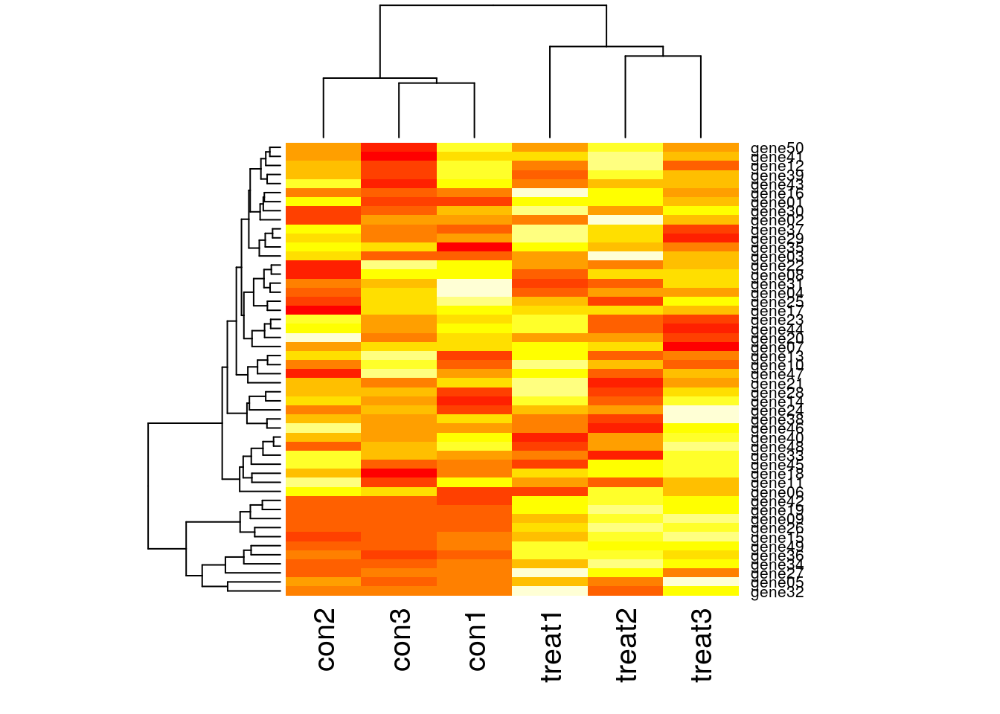
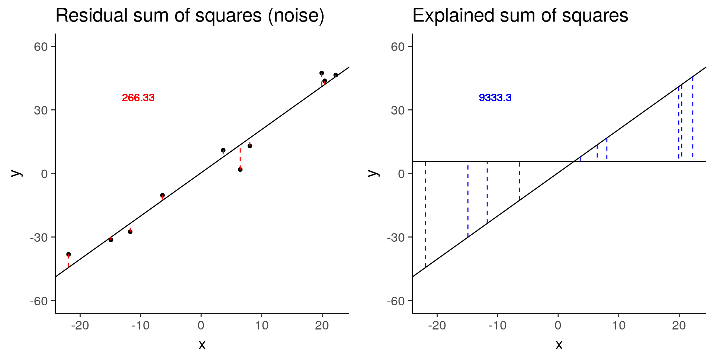
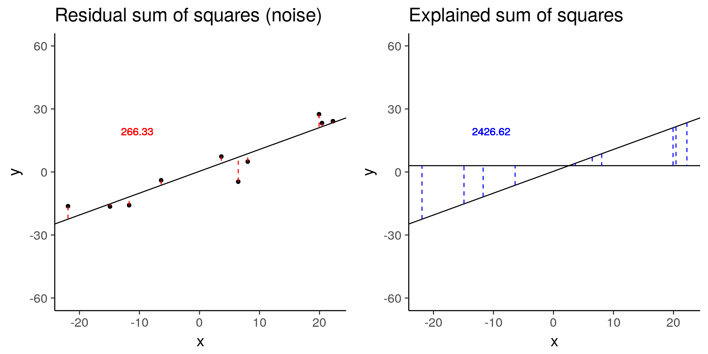

Introduction to differential expression analysis
John Blischak
2018-02-10
Last updated: 2018-02-16
Code version: 980afe1
Cover the basics of the biology and the statistics.
gexp <- readRDS("../data/ch01.rds")What is differential expression? (Video)
Describe a simple model of gene regulation (transcription factors, DNA, RNA, protein) and the functional genomics technologies used to measure the various features. Focus on the type of data they return (continuous vs. discrete).
Functional genomics technologies (MultipleChoiceExercise)
Choose which is true. The options will be various combinations of genomics technologies, what they measure, and the type of data they return. For example, “Microarrays measure RNA levels and return continuous data. ChIP-seq measures transcription factor binding to DNA and returns discrete data.” is true.
Visualize one differentially expressed gene
Visualize one differentially expressed gene with boxplots (geom_boxplot).
library("dplyr")
Attaching package: 'dplyr'The following objects are masked from 'package:stats':
filter, lagThe following objects are masked from 'package:base':
intersect, setdiff, setequal, unionlibrary("tidyr")
library("stringr")
single_gene <- gexp %>% as.data.frame %>%
slice(34) %>%
gather(key = "status", value = "gene") %>%
mutate(status = str_extract(status, "[a-z]*"))library("ggplot2")
ggplot(single_gene, aes(x = status, y = gene)) +
geom_boxplot()
Visualize many differentially expressed genes
Visualize many differentially expressed genes with a heatmap (stats::heatmap).
dim(gexp)[1] 50 6head(gexp) con1 con2 con3 treat1 treat2 treat3
gene01 13.74914 16.82282 13.76740 16.97906 16.85671 16.03717
gene02 16.40848 14.02148 15.98390 15.80187 20.92417 17.07906
gene03 11.78808 15.31832 11.56220 13.34076 19.05473 14.08600
gene04 20.28549 12.11155 15.97373 12.71156 14.50692 14.75665
gene05 16.93984 20.25039 13.98756 22.97787 18.19122 36.07593
gene06 13.48818 21.89078 21.25145 12.72401 23.44257 19.38827heatmap(gexp)
What is a linear model? (Video)
Review the basics of multiple linear regression (dependent vs independent variables, continuous vs discrete covariates, intercept term, error term). Demonstrate how to specify equations in R (e.g. lm and model.matrix).
Transcript: As you just visualized, differential expression describes the situation in which a gene has a different mean expression level between conditions. While some gene expression patterns are easily diagnosed as differential expression or not from a quick visualization, you also saw some examples that were more ambiguous. Furthermore, you need a method that is more robust than a quick visual inspection and also scales to thousands of genes. For this you will use the tools of statistical inference to determine if the difference in mean expression level is larger than that expected by chance. Specifically, you will use linear models to perform the hypothesis tests. Linear models are an ideal choice for genomics experiments because their flexibility and robustness to assumptions allow you to conveniently model data from various study designs and data sources.
You should have already been introduced to linear models, for example in a DataCamp course such as Correlation and Regression, or in an introductory statistics course. Here I’ll review the terminology we will use in the remainder of the course, how to specify a linear model in R, and the intuition behind linear models.
\[ Y = \beta_0 + \beta_1 X_1 + \epsilon \]
In this equation of a linear model, Y is the response variable. It must be a continuous variable. In the context of differential expression, it is a relative measure of either RNA or protein expression level for one gene. \(X_1\) is an explanatory variable, which can be continuous or discrete, for example, control group versus treatment, or mutant versus wild type. \(\beta_1\) quantifies the effect of the explanatory variable on the response variable. Furthermore, we can add additional explanatory variables to the equation for more complicated experimental designs. Lastly, models the random noise in the measurements.
In R, you specify a linear model with the function lm. This uses R’s formula syntax. On the left is the object that contains the response variable, and to the right of the tilde are the objects that contain the explanatory variable.
lm(y ~ x1)A second explanatory variable can be added with a plus sign.
\[ Y = \beta_0 + \beta_1 X_1 + \beta_2 X_2 + \epsilon \]
lm(y ~ x1 + x2)Building some intuition.
library("broom")
library("cowplot")
library("dplyr")
library("ggplot2")
theme_set(theme_classic(base_size = 16))
# Simulate a linear regression.
#
# n = sample size
# effect = slope
# error = standard deviation of distribution of residuals
# seed = seed for random number generator
#
# Returns a data.frame with the following columns:
#
# x Explanatory variable
# y Response variable
# y_bar Mean of response variable
# intercept Intercept of least squares regression line
# slope Slope of least squares regression line
# y_hat Fitted values
# fstat F-statistic
# ss_exp Explained sum of squares
# ss_res Residual sum of squares (noise)
sim_lm <- function(n, effect, error, seed = 1) {
stopifnot(is.numeric(n), n > 0, length(n) == 1)
stopifnot(is.numeric(effect), length(effect) == 1)
stopifnot(is.numeric(error), error > 0, length(error) == 1)
stopifnot(is.numeric(seed), length(seed) == 1)
set.seed(seed)
x = runif(n, min = -25, max = 25)
y = x * effect + rnorm(n, sd = error)
y_bar = mean(y)
mod <- lm(y ~ x)
coefs <- coef(mod)
intercept <- coefs[1]
slope <- coefs[2]
y_hat = fitted(mod)
anova_tidy <- tidy(anova(mod))
fstat <- anova_tidy$statistic[1]
ss <- anova_tidy$sumsq
ss_exp <- ss[1]
ss_res <- ss[2]
stopifnot(ss_exp - sum((y_hat - y_bar)^2) < 0.01)
stopifnot(ss_res - sum(residuals(mod)^2) < 0.01)
return(data.frame(x, y, y_bar, intercept, slope, y_hat, fstat, ss_exp, ss_res,
row.names = 1:n))
}
# Visualize the residual sum of squares
plot_ss_res <- function(d) {
ggplot(d, aes(x = x, y = y)) +
geom_point() +
geom_abline(aes(intercept = intercept, slope = slope)) +
geom_linerange(aes(ymin = y, ymax = y_hat), color = "red",
linetype = "dashed") +
geom_text(aes(x = quantile(x, 0.25), y = quantile(y, 0.75),
label = round(ss_res, 2)), color = "red") +
labs(title = "Residual sum of squares (noise)") +
ylim(-60, 60)
}
# Visualize the explained sum of squares
plot_ss_exp <- function(d) {
ggplot(d, aes(x = x, y = y)) +
geom_abline(aes(intercept = intercept, slope = slope)) +
geom_hline(aes(yintercept = y_bar)) +
geom_linerange(aes(ymin = y_hat, ymax = y_bar), color = "blue",
linetype = "dashed") +
geom_text(aes(x = quantile(x, 0.25), y = quantile(y, 0.75),
label = round(ss_exp, 2)), color = "blue") +
labs(title = "Explained sum of squares") +
ylim(-60, 60)
}
# baseline
baseline <- sim_lm(n = 10, effect = 2, error = 5)
baseline_ss_res <- plot_ss_res(baseline)
dir.create("../figure/ch01/", recursive = TRUE, showWarnings = FALSE)
ggsave("../figure/ch01/baseline_ss_res.png", baseline_ss_res, width = 5, height = 6)
baseline_ss_exp <- plot_ss_exp(baseline)
ggsave("../figure/ch01/baseline_ss_exp.png", baseline_ss_exp, width = 5, height = 6)
plot_grid(baseline_ss_res, baseline_ss_exp)
baseline$fstat[1][1] 280.3557# Increased error
more_error <- sim_lm(n = 10, effect = 2, error = 10)
more_error_ss_res <- plot_ss_res(more_error)
dir.create("../figure/ch01/", recursive = TRUE, showWarnings = FALSE)
ggsave("../figure/ch01/more_error_ss_res.png", more_error_ss_res, width = 5, height = 6)
more_error_ss_exp <- plot_ss_exp(more_error)
ggsave("../figure/ch01/more_error_ss_exp.png", more_error_ss_exp, width = 5, height = 6)
plot_grid(more_error_ss_res, more_error_ss_exp)more_error$fstat[1][1] 72.89125# Decreased signal
less_signal <- sim_lm(n = 10, effect = 1, error = 5)
less_signal_ss_res <- plot_ss_res(less_signal)
dir.create("../figure/ch01/", recursive = TRUE, showWarnings = FALSE)
ggsave("../figure/ch01/less_signal_ss_res.png", less_signal_ss_res, width = 5, height = 6)
less_signal_ss_exp <- plot_ss_exp(less_signal)
ggsave("../figure/ch01/less_signal_ss_exp.png", less_signal_ss_exp, width = 5, height = 6)
plot_grid(less_signal_ss_res, less_signal_ss_exp)
less_signal$fstat[1][1] 72.89125Standard linear model for differential expression of one gene
Run lm on one gene.
Standard linear model for differential expression of many genes
Use for loop to run lm on many genes (exact number of genes will be determined by 5 sec time limit for DataCamp exercises).
Visualize results of standard differential expression analysis
Use geom_point to plot effect size versus variance and color by statistical significance.
limma: linear models for functional genomics (Video)
Explain the advantages of using limma for functional genomics experiments over traditional linear models: 1) share information across genes to reduce uncertainty of variance, 2) flexible system for specifying contrasts of interest, 3) integrated into standard differential expression workflow. Introduce a limma workflow diagram to orient the individual steps in the following chapters within the larger analysis.
limma for differential expression of many genes
Run pre-written limma code to easily test thousands of genes.
Visualize results of limma differential expression analysis
Use geom_point to plot effect size versus variance and color by statistical significance.
The benefit of sharing information across genes
Visualize the gene expression pattern of a gene called DE by a traditional linear model but not by limma.
Session information
sessionInfo()R version 3.3.2 (2016-10-31)
Platform: x86_64-apple-darwin13.4.0 (64-bit)
Running under: OS X Yosemite 10.10.5
locale:
[1] en_US.UTF-8/en_US.UTF-8/en_US.UTF-8/C/en_US.UTF-8/en_US.UTF-8
attached base packages:
[1] stats graphics grDevices utils datasets methods base
other attached packages:
[1] cowplot_0.9.2 broom_0.4.2 ggplot2_2.2.1 bindrcpp_0.2 stringr_1.2.0
[6] tidyr_0.6.3 dplyr_0.7.2
loaded via a namespace (and not attached):
[1] Rcpp_0.12.14 git2r_0.21.0 plyr_1.8.4 bindr_0.1
[5] tools_3.3.2 digest_0.6.13 evaluate_0.10.1 tibble_1.3.3
[9] gtable_0.2.0 nlme_3.1-128 lattice_0.20-34 pkgconfig_2.0.1
[13] rlang_0.1.6 psych_1.7.5 yaml_2.1.16 parallel_3.3.2
[17] knitr_1.18 rprojroot_1.3-2 grid_3.3.2 glue_1.1.1
[21] R6_2.2.2 foreign_0.8-67 rmarkdown_1.8 reshape2_1.4.2
[25] magrittr_1.5 backports_1.1.2 scales_0.4.1 htmltools_0.3.6
[29] assertthat_0.2.0 mnormt_1.5-5 colorspace_1.3-2 labeling_0.3
[33] stringi_1.1.5 lazyeval_0.2.1 munsell_0.4.3 This R Markdown site was created with workflowr